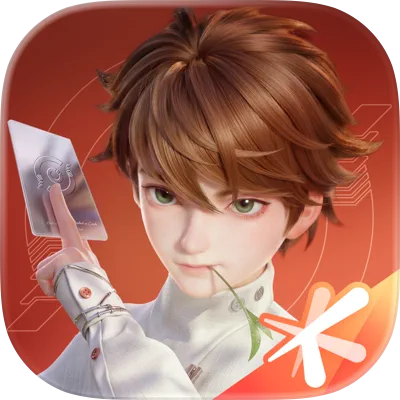
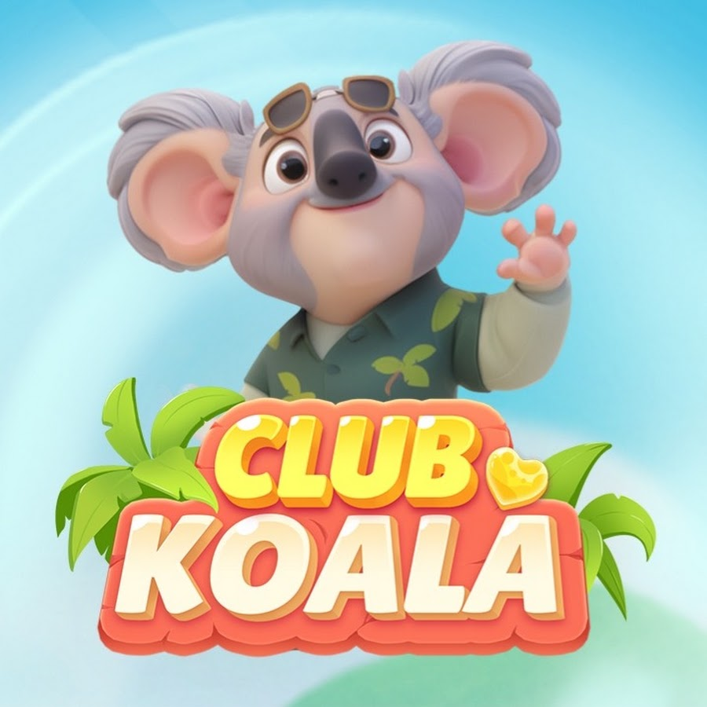

常宸 · onechang
你好，我是常宸，一名体验设计师。我喜欢把复杂的规则和状态一点点理顺，让人知道自己在哪、能做什么，以及下一步会发生什么。至于我在哪儿，似乎没那么重要——或许我可以出现在任何地方，哈哈。
最近，我在  
我用 Obsidian 整理知识、证据与设计判断，也用 vibe coding 做自己的产品。让想法早点被试用，是我喜欢的工作方式。
工作之外，我也会留下一些记下来的事。欢迎来聊游戏、AI、一个具体的问题，或者还没想明白的念头。